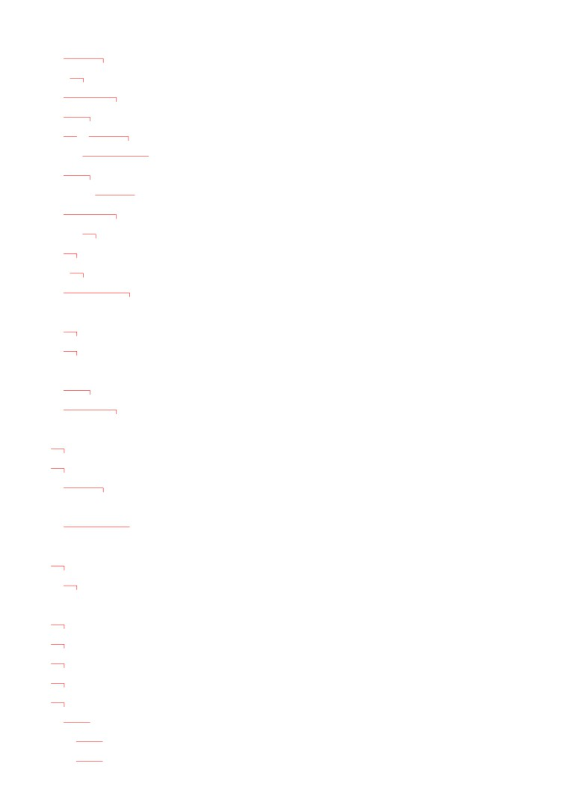
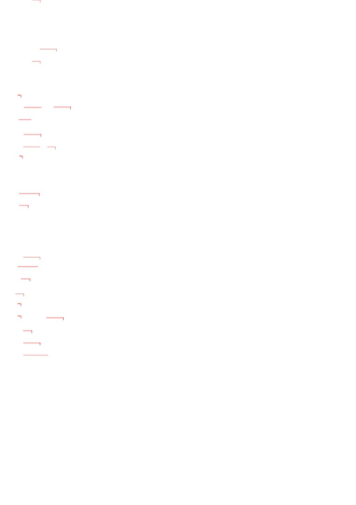
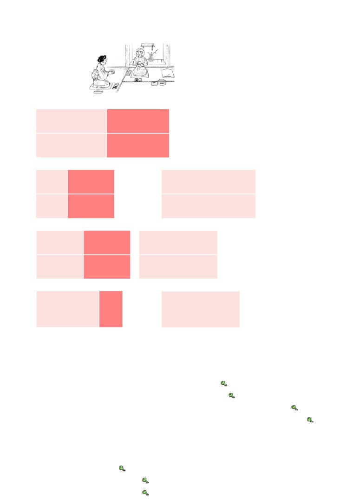
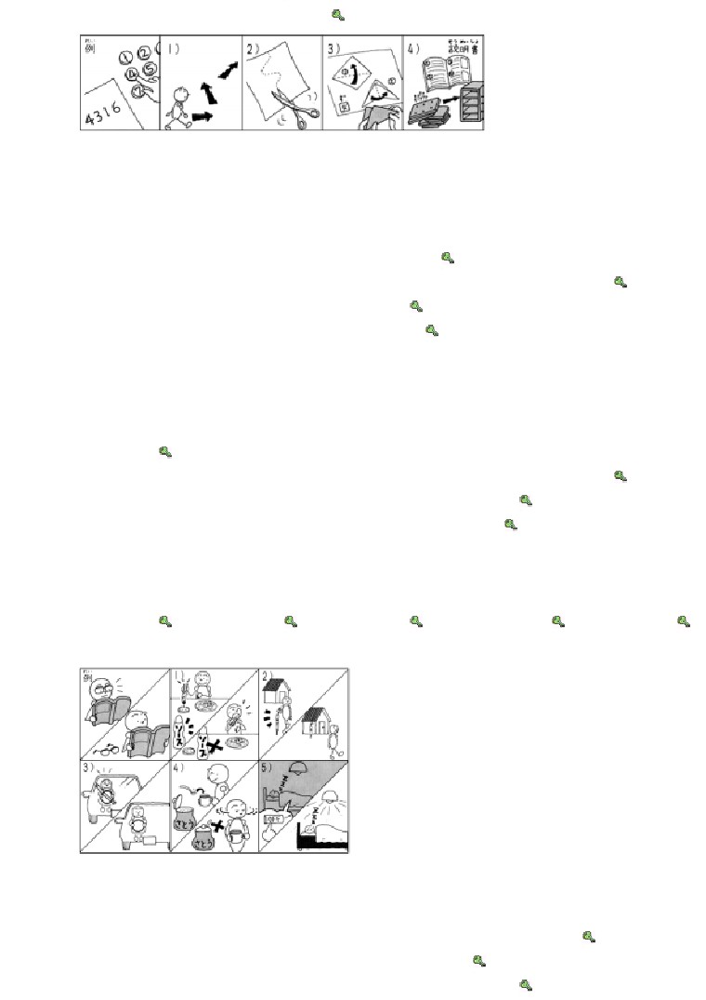
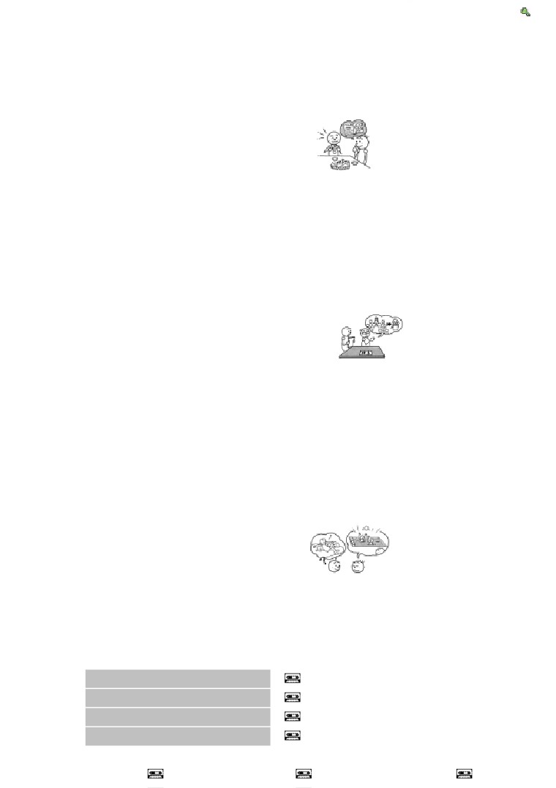
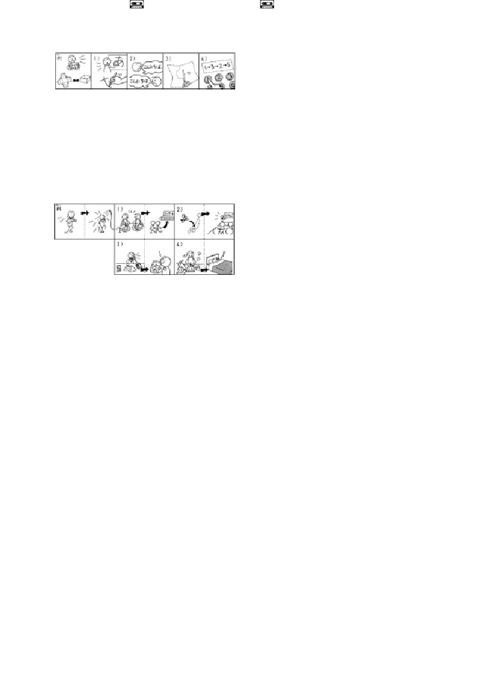
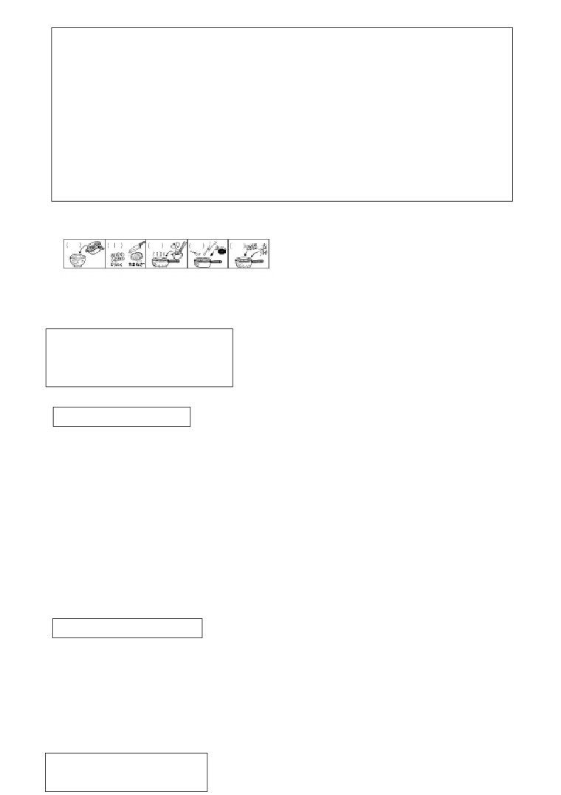
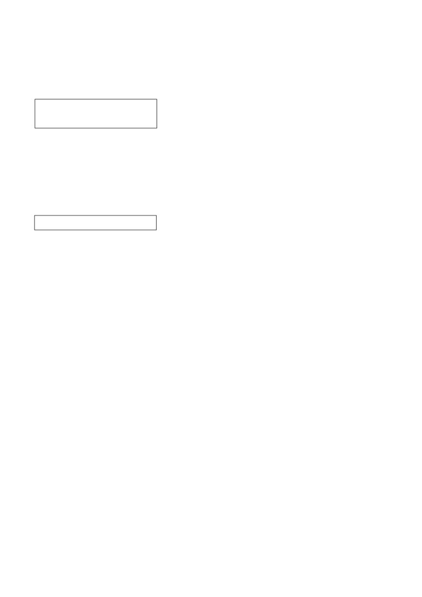

第３４課
課:34 (頁:1/9)
ことば
1.
みがきます
Ⅰ
磨きます
刷 牙〕
［はを～］
［歯を～］
2. くみたてます Ⅱ
組み立てます
組裝
3. おります Ⅰ
折ります
折斷，折彎
4.
きが つきます
Ⅰ
気が つきます
注意〔
別忘東西〕
［わすれものに～］
［忘れ物に～］
5.
つけます
Ⅱ
蘸上〔
醬油〕
［しょうゆを～］
6.
みつかります
Ⅰ
見つかります
找到〔
鑰匙〕
［かぎが～］
7.
します
Ⅲ
打〔
領帶〕
［ネクタイを～］
8. しつもんします Ⅲ
質問します
提問
9. ほそい
細い
瘦，細
10. ふとい
太い
胖，粗
11. ぼんおどり
盆踊り
盂蘭盆節舞
12. スポーツクラブ
體育俱樂部，運動俱樂部
13. かぐ
家具
家具
14. キー
鑰匙
15. シートベルト
安全帶
16. せつめいしょ
説明書
說明書
17. ず
図
圖
18. せん
線
線
19. やじるし
矢印
箭頭
20. くろ
黒
黑
21. しろ
白
白
22. あか
赤
紅
23. あお
青
藍
24. こん
紺
深藍
25. きいろ
黄色
黃色
26. ちゃいろ
茶色
棕色
27. しょうゆ
醬油

課:34 (頁:2/9)
28.
ソース
醬汁
29.
～か～
～或者～
30. ゆうべ
昨晚
31. さっき
剛才
かい わ
会話
さ どう
茶道
茶道
ちゃ
お茶を たてます Ⅱ
泡茶，沏茶
さき
先に
首先，先（表示行動的順序）
の
載せます Ⅱ
放上
これで いいですか。
這樣可以嗎？
にが
苦い
苦
よ
もの
…読み物………………………………………………………………………………………………
おや こ
親子どんぶり
雞肉雞蛋蓋飯
ざいりょう
材料
材料
ぶん
…分
…分鐘
…グラム
…克
こ
…個
…個（計算小件物品的量詞）
たまねぎ
洋蔥
よんぶん
4分の 1（ 1/4 ）
4分之1
ちょう み りょう
調味料
調味料
なべ
鍋
ひ
火
火
ひ
火に かけます Ⅱ
加熱
に
煮ます Ⅱ
煮
に
煮えます Ⅱ
煮熟
どんぶり
蓋飯，丼
…………………………………………………………………………………………………………
ぶん けい
文型
いま
い
か
1. わたしが 今から 言う とおりに、書いて ください。
た
は
みが
2. ごはんを 食べた あとで、歯を 磨きます。
さ とう
い
の
3. コーヒーは 砂糖を 入れないで 飲みます。
れい ぶん
例文
みな
ぼん おど
れんしゅう
1. 皆さん、盆踊りを 練習しましょう。
…はい。
おど
わたしが する とおりに、踊って ください。
ゆめ
み
課:34 (頁:3/9)
2.
おもしろい 夢を 見ました。
ゆめ
み
はな
…どんな 夢ですか。 見た とおりに、話して ください。
じ ぶん
く
た
3. この テーブルは 自分で 組み立てるんですか。
せつ めい しょ
く
た
かん たん
…ええ、説明書の とおりに、組み立てて ください。 簡単です。
さい ふ
お
4. どこで 財布を 落としたんですか。
かえ
き
…わかりません。 うちへ 帰った あとで、気が ついたんです。
し ごと
の
い
5. 仕事の あとで、飲みに 行きませんか。
い
ひ
…すみません。 きょうは スポーツクラブヘ 行く 日なんです。
とも だち
けっ こん しき
なに
き
い
6. 友達の 結婚式に 何を 着て 行ったら いいですか。
に ほん
おとこ
ひと
くろ
こん
…そうですね。 日本では 男の 人は 黒か 紺の スーツを
き
しろ
い
着て、白い ネクタイを して 行きます。
7. これは しょうゆを つけるんですか。
なに
た
…いいえ、何も つけないで 食べて ください。
すこ
ほそ
8. 少し 細く なりましたね。 ダイエットしたんですか。
の
えき
ある
…いいえ。 バスに 乗らないで、駅まで 歩いて いるんです。
かい わ
会話
する とおりに して ください
いち ど
さ どう
み
クララ
：
一度 茶道が 見たいんですが……。
わた
なべ
らい しゅう
ど よう び
い
渡 辺
：
じゃ、来週の 土曜日 いっしょに 行きませんか。
------------------------------
ちゃ
せん せい
わた なべ
ちゃ
お茶の 先生：
渡辺さん、お茶を たてて ください。
か し
さき
クララさん、お菓子を 先に どうぞ。
さき
か し
た
クララ
：
えっ、先に お菓子を 食べるんですか。
ちゃ
せん せい
あま
か し
た
ちゃ
お茶の 先生：
ええ。 甘い お菓子を 食べた あとで、お茶を
の
飲むと、おいしいんですよ。
クララ
：
そうですか。
ちゃ
せん せい
ちゃ
の
お茶の 先生：
では、お茶を 飲みましょう。
わたしが する とおりに、して くださいね。
みぎ て
と
ひだり て
の
まず 右手で おちゃわんを 取って、左手に 載せます。
クララ
：
これで いいですか。
ちゃ
せん せい
つぎ
かい
まわ
お茶の 先生：
はい。 次に おちゃわんを 2回 回して、それから
の
飲みます。
------------------------------

ちゃ
せん せい
課:34 (頁:4/9)
お茶の 先生：
いかがですか。
すこ
にが
クララ
： 少し 苦いですが、おいしいです。
れん しゅう
練習 Ａ
いま
お
1.
わたしが 今から
せつめいする
とおりに、パソコンの キーを 押して くださ
わたしが さっき
いった
この
ばんごうの
この
せつめいしょの
し ごと
の
い
2.
仕事が
おわった
あとで、
飲みに 行きます。
せつ めい
しつ もん
説明を
きいた
質問します。
あ
スポーツの
シャワーを 浴びます。
の
しょくじの
コーヒーを 飲みます。
かさ
で
3.
傘を
もって
出かけます。
あさ
かい しゃ
い
朝ごはんを
たべて
会社へ 行きます。
かさ
で
傘を
もたないで
出かけます。
あさ
かい しゃ
い
朝ごはんを
たべないで
会社へ 行きます。
にち よう び
4.
日曜日 どこも
いか
ないで、
うちに います。
かい だん
つか
エレベーターに
のら
階段を 使います。
し ごと
あそ
仕事を
し
遊んで います。
れん しゅう
練習 Ｂ
れい
い
なら
1. 例： さっき 言いました・いすを 並べて ください
い
なら
→ さっき 言った とおりに、いすを 並べて ください。
1)
わたしが します・やって ください →
はは
なら
りょう り
つく
2)
母に 習いました・料理を 作りました →
は い しゃ
おし
は
みが
3)
歯医者に 教えて もらいました・歯を 磨いて います →
せつ めい しょ
か
くすり
の
4)
説明書に 書いて あります・この 薬を 飲んで ください →
れい
お
2.
例： ボタンを 押します
ばん ごう
お
→ 番号の とおりに、ボタンを 押して ください。
い
1)
行きます →
かみ
き
2)
紙を 切ります →
かみ
お
3)
紙を 折ります →

か ぐ
く
た
課:34 (頁:5/9)
4)
家具を 組み立てます →
れい
がっ こう
なか
けん がく
しつ もん
3.
例1： 学校の 中を 見学しました・質問しました
がっ こう
なか
けん がく
しつ もん
→ 学校の 中を 見学した あとで、質問しました。
れい
えい が
かの じょ
うみ
み
い
例2： 映画・彼女と 海を 見に 行きました
えい が
かの じょ
うみ
み
い
→ 映画の あとで、彼女と 海を 見に 行きました。
うん どう
の
1)
運動しました・ビールを 飲みました →
あたら
か
とけい
み
2)
新しいのを 買いました・なくした 時計が 見つかりました →
しょく じ
3)
コンサート・食事を しましょう →
あ
4)
ジョギング・シャワーを 浴びます →
れい
わす もの
き
お
4.
例： いつ 忘れ物に 気が つきましたか。（ バスを 降ります ）
お
き
→ バスを 降りた あとで、気が つきました。
れんしゅう
ど よう び
し ごと
お
1)
いつ サッカーの 練習を しますか。（ 土曜日 仕事が 終わります ）
→
しょく じ
はい
2)
すぐ 食事を しますか。（ いいえ、おふろに 入ります ） →
あ
こう ぎ
3)
いつ タワポンさんに 会いますか。（ 講義 ） →
で
ひる
4)
すぐ 出かけますか。（ いいえ、昼ごはん ） →
れい
めがね
ほん
よ
5.
例： → 眼鏡を かけて 本を 読みます。
めがね
ほん
よ
→ 眼鏡を かけないで 本を 読みます。
1)
→
2)
→
3)
→
4)
→
5)
→
→
→
→
→
→
れい
ね
かの じょ
なが
て がみ
か
6. 例： ゆうべは 寝ませんでした・彼女に 長い 手紙を 書きました
ね
かの じょ
なが
て がみ
か
→ ゆうべは 寝ないで、彼女に 長い 手紙を 書きました。
の
えき
ある
い
1)
いつも バスに 乗りません・駅まで 歩いて 行きます →
か
じ ぶん
つく
2)
ケーキは 買いません・自分で 作ります →
す
あつ
3)
テレホンカードは 捨てません・集めて います →

い
み
課:34 (頁:6/9)
きのうは どこも 行きませんでした・うちで ビデオを 見ました →
4)
れんしゅう
練習 Ｃ
つく
1. Ａ: この てんぷら、ミラーさんが 作ったんですか。
りょう り
ほん
か
Ｂ: ええ。 料理の 本に 書いて ある とおりに
つく
作ったんですが……。
Ａ: とても おいしいです。
Ｂ: ああ、よかった。
1)
カレー
とも だち
おし
友達に 教えて もらいました
2)
ケーキ
りょう り ばん ぐみ
み
テレビの 料理番組で 見ました
か ちょう
しゅっちょう
み
2. Ａ: 課長、ちょっと 出張の レポートを 見て いただけませんか。
いま
かい ぎ
かい ぎ
お
み
Ｂ: 今から 会議ですから、会議が 終わった あとで、見ます。
ねが
Ａ: お願いします。
し てん
おく
し りょう
1)
支店へ 送る 資料
きゃく
き
もうすぐ お客さんが 来ます
きゃく
かえ
お客さんが 帰ります
でん き
ぶ ちょう
だ
て がみ
2)
パワー電気の 部長に 出す 手紙
いま いそが
今 忙しいです
ひる
た
昼ごはんを 食べます
にち よう び
い
3. Ａ: あしたは 日曜日ですね。 どこか 行きますか。
こ
つ
い
Ｂ: ええ。 子どもを プールヘ 連れて 行かなければ ならないんです。
た なか
田中さんは？
で
やす
おも
Ａ:
どこも 出かけないで、ゆっくり 休もうと 思って います。
Ｂ: そうですか。 いいですねえ。
こ
や きゅう
し あい
1)
子どもの 野球の 試合を
み
い
見に 行きます
なに
何も しません
とも だち
ひ
こ
てつだ
2)
友達の 引っ越しを 手伝いに
い
行きます
い
どこも 行きません
もん だい
問題
1.
1)
…いろはにほへと
れい
み
2)
…例： テレビを見ています。
れい
くろ ふく
き
い
3)
…例： 黒い服を着て行きます。
れい
4)
…例： いいえ、ありません。
2.
1)
( ○ )
2)
( ○ )
3)
( × )

課:34 (頁:7/9)
4)
( ○ )
5)
( ○ )
れい
せつ めい
はこ
く
た
3.
例： わたしが （ 説明した ） とおりに、（ 箱を 組み立てて ください ）。
か
か
1)
わたしが （ 書いた ） とおりに、（ 書いてください ）。
いま
い
い
2)
今から わたしが （ 言う ） とおりに、（ 言ってください ）。
せん
き
3)
この （ 線の ） とおりに、（ 切ってください ）。
ばん ごう
お
4)
（ 番号の ） とおりに、（ 押してください ）。
れい
あ
4.
例： （ ジョギングを した ） あとで、（ シャワーを 浴びました ）。
しょく じ
い
1)
（ 食事をした ） あとで、（ コンサートに行きました ）。
に ほん
き
に ほん ご
なら
2)
（ 日本へ来て ）から、（ 日本語を習いました ）。
し ごと
し ごと
の
3)
（ 仕事の（仕事をした） ） あとで、（ ビールを飲みました ）。
ね
て がみ
か
4)
（ 寝る ） まえに、（ 手紙を書きました ）。
れい
かい しゃ
やす
はたら
5.
例： あしたは 会社を 休みますか。（ 働きます ）
やす
はたら
…いいえ、（ 休まないで、働きます ）。
しゅうまつ
い
ほん
よ
1)
週末は どこか 行きますか。（ うちで 本を 読みます ）
い
ほん
よ
…いいえ、（ どこも行かないで、うちで本を読みます ）。
なつ やす
くに
かえ
ほっ かい どう
りょ こう
2)
ことしの 夏休みは 国へ 帰りますか。（ 北海道を 旅行します ）
くに かえ
ほっ かい どう
りょ こう
…いいえ、（ 国へ帰らないで、北海道を旅行します ）。
なに
か
かえ
3)
デパートで 何か 買いましたか。（ すぐ 帰りました ）
なに
か
かえ
…いいえ、（ 何も買わないで、すぐ帰りました ）。
にち よう び
で
4)
日曜日は 出かけましたか。（ レポートを まとめました ）
で
…いいえ、（ 出かけないで、レポートをまとめました ）。
れい
あさ
た
た
た
き
6. 例： 朝ごはんを
（ ①食べて、②食べないで、③食べながら ） 来ましたから、
おなかが すきました。（②）
さい ふ
も
も
も
で
なに
1)
財布を （ ①持って、②持たないで、③持ったら ） 出かけましたから、何も
か
買えませんでした。（②）
はな
はな
はな
しょく じ
2)
みんなと （ ①話して、②話すと、③話しながら ） 食事します。（③）
しゅっせき
3)
ネクタイを （ ①して、②しながら、③すると ） パーティーに 出席します。
お
お
お
つ
で
4)
ボタンを （ ①押しても、②押して、③押さないで ）、お釣りが 出ません。（

おや こ
つく
かた
課:34 (頁:8/9)
7.
親子どんぶりの 作り方
ざいりょう
ひとり ぶん
とり にく
たまご
こ
こ
材料（ 1人分 ） 鳥肉（ 50グラム ）、卵（ 1個 ）、たまねぎ（ 1/4個 ）、
ちょう み りょう
さ とう
さけ
調味料（ しょうゆ、砂糖、酒 ）、ごはん
とり にく
き
き
かた
1. 鳥肉、たまねぎを 切ります。 切り方は （ 1 ）の とおりです。
みず
ちょう み りょう
い
ひ
2. なべに 水と 調味料を 入れ、火に かけます。
ちょう み りょう
あつ
ざいりょう
い
に
3. 調味料が 熱く なったら、（ 1 ）の 材料を 入れ、煮ます。
にく
に
たまご
い
たまご
い
ひ
4. 肉が 煮えたら、卵を 入れます。 卵を 入れた あとで、火を
け
消します。
ぶん
うえ
の
5.
1分ぐらい あとで、とんぶりの ごはんの 上に 載せます。
うえ
せつ めい
した
え
ばん ごう
か
上の 説明の とおりに、下の 絵に 番号を 書いて ください。
（ 5 ） （ 1 ）
（ 4 ）（ 2 ） （ 3 ）
文法
１
動詞1 字典形
動詞 1 た形 }とおりに、 動詞 2
名詞
の
1)
動詞1 とおりに、動詞2
這是將聽到、見到、讀到、學到（動詞1）的東西，用文字、語言或動作（動詞2）
如實表現出來的意思。
①わたしが やる とおりに、やって ください。
請照著我做的做。
い
か
②わたしが 言う とおりに、 書って ください。
請按我說的寫。
み
はな
③見た とおりに、 話して ください。
請把你看的說出來。
動詞1 表示的動作，將要發生用字典形，已經發生的用た
形。
2)
名詞の とおりに、動詞
表示按照名詞顯示的標準進行某個動作。
せん
かみ
き
④線の とおりに、 紙を 切って ください。
按這條線把紙裁開。
せつ めい しょ
く
た
⑤説明書の とおりに、 組み立てました。
按說明書進行了組裝。
２ . 動詞 1 た形
あとで、 動詞
2
}
名詞
の

課:34 (頁:9/9)
動詞1 或名詞表示的事情進行（發生）後，再做動詞2 所表示的事情。
あたら
か
と け い
み
⑥新しいのを 買った あとで、なくした 時計が 見つかりました。
買了新的後，丟了的錶又找到了。
し ごと
の
い
⑦仕事の あとで、 飲みに 行きませんか。
工作結束後要不要去喝杯酒呢？
它在語氣上比同樣意思的「動詞て形から」更強調時間的前後關係。
３.
動詞 1 て形
動詞
2
}
動詞 1 ない形 ないで
動詞1表示附隨在動詞2表示的動作、狀態下。例如下面的例句⑧⑨
中，敘述的是「
たべます」這個動作進行時，沾醬油還是不沾醬油。動詞1和動詞2的行為主體是同
一個。
た
⑧しょうゆを つけて 食べます。
沾醬油吃。
た
⑨しょうゆを つけないで 食べます。
不沾醬油吃。
４.
動詞1 ない形 ないて、動詞 2
這個句型表示有兩個不能同時進行的事物（動詞1、動詞2），選擇其中一個（動
詞2）進行的意思。
にち よう び
い
やす
⑩日曜日は どこも 行かないで、うちで ゆっくり 休みます。
星期天哪裡也不去，要在家裡好好休息。